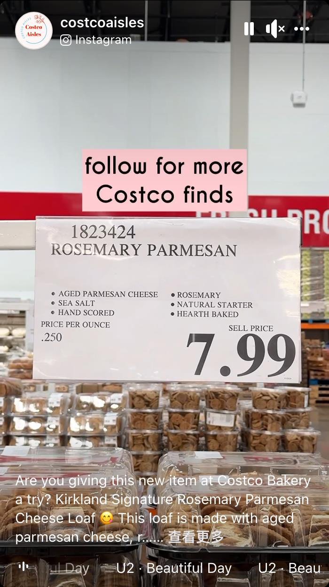

沙加缅度蜜蜂报报导，去好市多（Costco）购物，许多知名的「爆款」面包糕饼总令消费者驻足。近期推出一款备受追捧的橙色梦幻蛋糕（Orange Dreamsicle Cake），顾客仍处在发售日的狂热中。
店内面包区如此受欢迎，主要是其丰富的商品，从甜甜圈到饼干、大蛋糕，从松饼到可颂、吐司等，能满足不同顾客需求。然有时推出的商品，价格却不太令人满意，例如最新上市的「柯克兰招牌迷迭香帕玛森起司面包」（Kirkland Signature Rosemary Parmesan Cheese Loaf）。
这本应是该店当季最受欢迎的产品之一，但顾客对其价格颇有微词。当该款面包抵达全国门市，几乎立即引发消费者关注。这款32盎司，手工造型，壁炉烘焙的工匠面包采用陈年帕玛森起司、迷迭香、海盐和特级初榨橄榄油制成，但7.99元价格，劝退不少消费者。
用户@costcoailes在IG上分享道「价格过高」，该条评论成了热评之一。有粉丝替其辩护，称这款面包「非常棒」，且表示若喜欢迷迭香，它「闻起来真的很香」。
尽管价格并不亲民，但这似乎不足以让所有人放弃购买。「我一直在等待这一刻」一位顾客写道，「我太想念好市多迷迭香面包了！我迫不及待想等这款面包出现在我购买的店里。」确实，这款面包价格稍显昂贵，但还不到十元，整体来说还算是一个不错的选择。该款面包可成为特殊场合晚宴上的完美搭配，也可搭配喜爱的果酱和奶油提升口感。
好市多新推出的柯克兰招牌迷迭香帕玛森起司面包。(costcoaisles IG）
沙加缅度蜜蜂报报导，去好市多（Costco）购物，许多知名的「爆款」面包糕饼总令消费者驻足。近期推出一款备受追捧的橙色梦幻蛋糕（Orange Dreamsicle Cake），顾客仍处在发售日的狂热中。
店内面包区如此受欢迎，主要是其丰富的商品，从甜甜圈到饼干、大蛋糕，从松饼到可颂、吐司等，能满足不同顾客需求。然有时推出的商品，价格却不太令人满意，例如最新上市的「柯克兰招牌迷迭香帕玛森起司面包」（Kirkland Signature Rosemary Parmesan Cheese Loaf）。
这本应是该店当季最受欢迎的产品之一，但顾客对其价格颇有微词。当该款面包抵达全国门市，几乎立即引发消费者关注。这款32盎司，手工造型，壁炉烘焙的工匠面包采用陈年帕玛森起司、迷迭香、海盐和特级初榨橄榄油制成，但7.99元价格，劝退不少消费者。
用户@costcoailes在IG上分享道「价格过高」，该条评论成了热评之一。有粉丝替其辩护，称这款面包「非常棒」，且表示若喜欢迷迭香，它「闻起来真的很香」。
尽管价格并不亲民，但这似乎不足以让所有人放弃购买。「我一直在等待这一刻」一位顾客写道，「我太想念好市多迷迭香面包了！我迫不及待想等这款面包出现在我购买的店里。」确实，这款面包价格稍显昂贵，但还不到十元，整体来说还算是一个不错的选择。该款面包可成为特殊场合晚宴上的完美搭配，也可搭配喜爱的果酱和奶油提升口感。

新推出的柯克兰招牌迷迭香帕玛森起司面包价格劝退不少人。(costcoaisles IG）